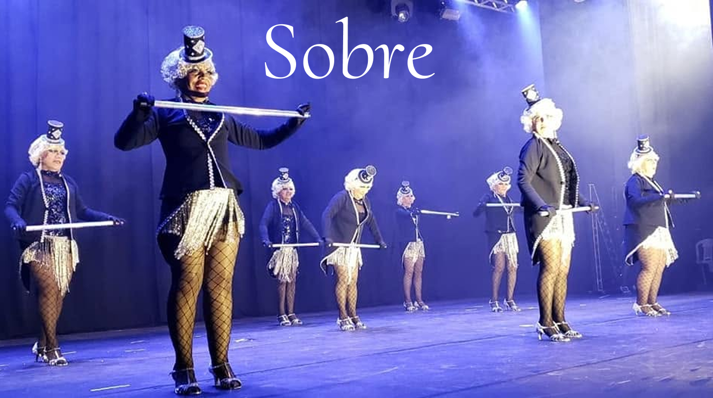
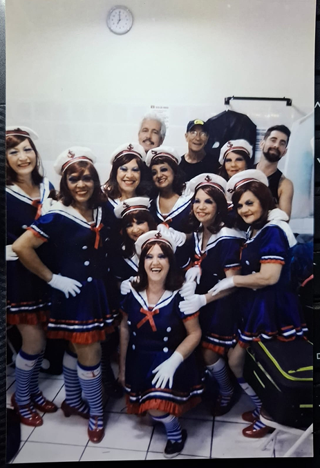
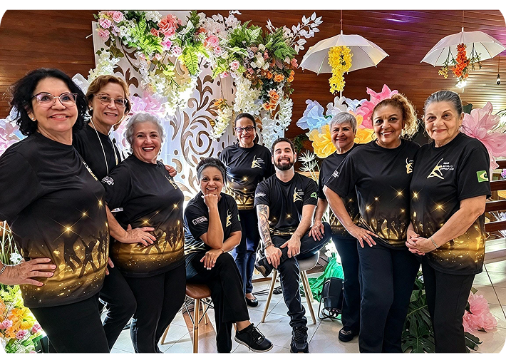

O grupo · Sorocaba 60+
A experiência
encontra o
movimento.
Somos o Viva Dança. Um encontro de histórias, criação e presença artística que se renova a cada gesto.
Conheça nossa essência
Presença artística.
Possibilidades abertas.
Quem somos
Muitas histórias.
Uma criação coletiva.
O Viva Dança Sorocaba 60+ é um grupo artístico independente formado por dez intérpretes 60+ e orientado pelo coreógrafo Vítor Gil.
Criado a partir de um núcleo que se conheceu em atividades ligadas aos Jogos Regionais do Idoso em Sorocaba (JORI), o grupo transformou o desejo de permanecer dançando em um projeto coletivo de criação, formação e circulação.

Nossa missão
Criar. Compartilhar.
Continuar dançando.
Criar, desenvolver e apresentar trabalhos de dança com intérpretes 60+, promovendo formação artística continuada, circulação cultural, convivência e reconhecimento público.
Com respeito às singularidades dos corpos e compromisso com a qualidade técnica.
Explore nosso repertórioNossa essência em prática
Princípios do
Viva Dança.
São estes os cinco princípios que orientam nossa criação, nossos ensaios e a maneira como vivemos e construímos o grupo.

Presença artística
Reconhecer pessoas 60+ como artistas e criadores.
Continuidade
Criar condições para que a experiência artística continue.
Compromisso coletivo
O trabalho de cada integrante sustenta o conjunto.
Aprendizagem
Abertura para novas linguagens e desafios.
Cuidado coletivo
Conciliar exigência artística, escuta e adaptação.
A força do coletivo
Cada pessoa importa.
Juntos, somos dança.
Conheça os integrantes, acompanhe os próximos encontros e descubra as histórias que continuamos construindo.

Vamos conversar
Há sempre espaço
para um novo encontro.
Conheça nosso trabalho e construa novas possibilidades com o Viva Dança.
Entre em contato